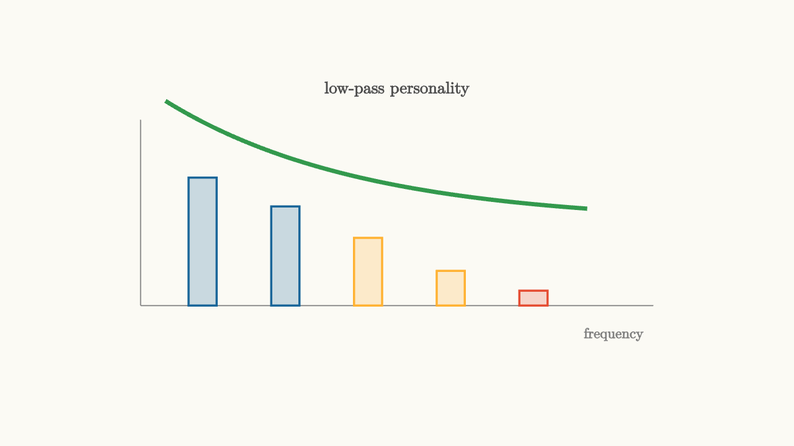

Frequency Response Draws A Circuit Personality
An impulse response describes a circuit in time. A transfer function describes it in algebra. Frequency response turns the same information into a portrait.
The portrait has two parts:
and
The first tells how much each sinusoidal component survives. The second tells how much each component is delayed or advanced in phase.

source
background = [0.985, 0.98, 0.955, 1]
camera = Camera(4.8b)
let Bar = |x, h, col| block {
. fill{alpha{0.22} col} stroke{col, 2} center{[x, -1.0 + h / 2, 0]} Rect([0.34, h])
}
mesh diagram = block {
. stroke{GRAY, 1} Line(start: [-3.1, -1.0, 0], end: [3.1, -1.0, 0])
. stroke{GRAY, 1} Line(start: [-3.1, -1.0, 0], end: [-3.1, 1.25, 0])
. Bar(x: -2.35, h: 1.55, col: BLUE)
. Bar(x: -1.35, h: 1.2, col: BLUE)
. Bar(x: -0.35, h: 0.82, col: ORANGE)
. Bar(x: 0.65, h: 0.42, col: ORANGE)
. Bar(x: 1.65, h: 0.18, col: RED)
. stroke{GREEN, 4} ExplicitFunc(|t| 1.25 * exp(-0.42 * (t + 2.4)), [-2.8, 2.3, 180])
. center{[0, 1.62, 0]} color{DARK_GRAY} Text("low-pass personality", 0.72)
. center{[2.62, -1.35, 0]} color{GRAY} Text("frequency", 0.62)
}
"response portrait"
play Fade(0.6)For the RC low-pass circuit,
The magnitude is
At small $\omega$, the denominator is close to one. Slow changes pass through almost unchanged. At large $\omega$, the denominator grows like $\omega RC$. Fast changes are attenuated.
The phase is
At low frequency, the capacitor voltage can follow the input with little lag. At high frequency, the capacitor voltage falls behind by almost a quarter cycle.
The cutoff is a turning point
The frequency
is the cutoff frequency. At that point,
Engineers often call this the minus three decibel point. The amplitude has fallen to about $0.707$ of the low-frequency value, and the power has been halved.
Cutoff is not a wall. It is a bend. The circuit gradually changes from a follower of slow variation into a smoother that resists fast variation.
source
param cutoff = 1.25
background = [0.985, 0.98, 0.955, 1]
camera = Camera(4.8b)
let Response = |cutoff, col| block {
. stroke{LIGHT_GRAY, 1} Line(start: [-3.0, -1.05, 0], end: [3.0, -1.05, 0])
. stroke{LIGHT_GRAY, 1} Line(start: [-3.0, -1.05, 0], end: [-3.0, 1.25, 0])
. stroke{col, 4} ExplicitFunc(|x| -1.05 + 1.8 / sqrt(1 + exp(1.6 * (x - cutoff))), [-2.8, 2.8, 220])
. color{ORANGE} Arrow(start: [cutoff, -1.05, 0], end: [cutoff, 0.18, 0])
}
"read the bend"
mesh title = center{[0, 1.65, 0]} color{DARK_GRAY} Text("the cutoff moves the bend", 0.66)
mesh curve = Response(cutoff: $cutoff, col: BLUE)
mesh label = center{[1.25, -1.55, 0]} color{ORANGE} Text("cutoff", 0.62)
play Write(0.9)
play Fade(0.4)
"larger capacitor"
cutoff = 0.25
curve = Response(cutoff: $cutoff, col: ORANGE)
label = center{[0.15, -1.55, 0]} color{ORANGE} Text("lower cutoff", 0.62)
play Lerp(1.2)
"smaller capacitor"
cutoff = 2.0
curve = Response(cutoff: $cutoff, col: GREEN)
label = center{[2.0, -1.55, 0]} color{GREEN} Text("higher cutoff", 0.62)
play Lerp(1.2)Drag the cutoff parameter and the bend moves. In a real RC circuit, increasing $R$ or $C$ lowers the cutoff because the time constant grows. Decreasing either one raises the cutoff.
Phase matters because waves add
Magnitude gets most of the attention because it is easy to see. Phase is just as important whenever signals combine.
Imagine a signal with two sinusoidal components. If a circuit delays the high-frequency component more than the low-frequency component, the shape of the waveform changes even when both magnitudes remain large. Sharp corners, pulses, and communication symbols rely on many frequencies lining up at the right time.
This is why filters are often judged by both magnitude response and phase response. Audio engineers care about whether a filter changes tone. Communication engineers also care about whether it spreads symbols into their neighbors. Control engineers care about phase because feedback can turn delay into oscillation.
Different circuits have different portraits
A low-pass circuit follows slow motion and suppresses fast motion. A high-pass circuit ignores slow offsets and responds to changes. A band-pass circuit listens most strongly around one preferred frequency. A notch filter rejects one narrow frequency while passing many others.
These names describe the magnitude portrait, but each comes from a physical story.
In an RC low-pass, the capacitor voltage cannot jump instantly, so fast input motion is smoothed. In an RC high-pass, a capacitor blocks steady current after charging, so DC disappears. In an RLC band-pass, energy trades between the inductor's magnetic field and the capacitor's electric field, so one range of frequencies receives special support.
Frequency response gives a circuit a face. Once you know how to read it, a plot is no longer decoration. It tells which parts of a signal the circuit respects, which parts it delays, and which parts it spends as heat.